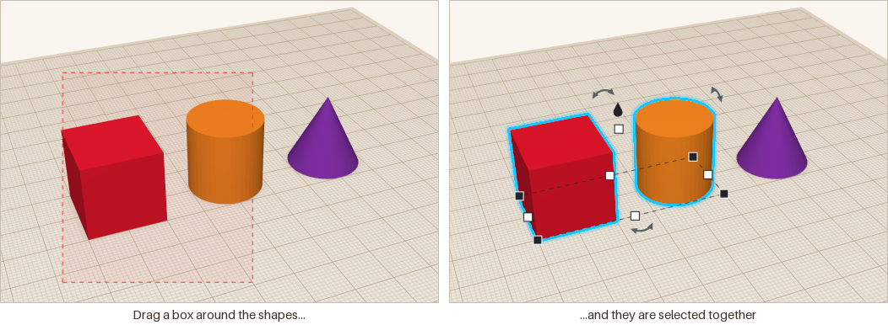
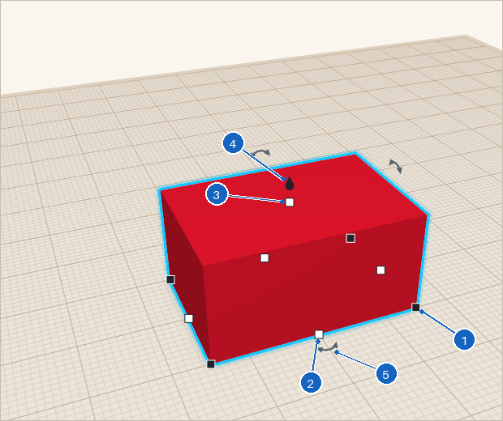
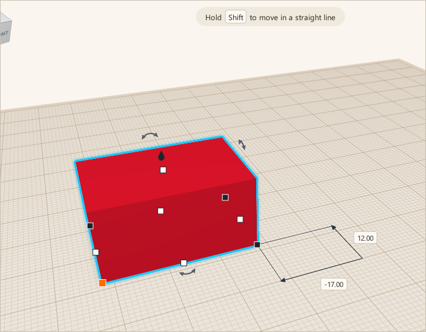
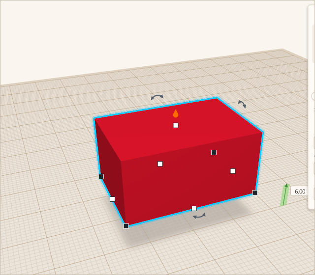
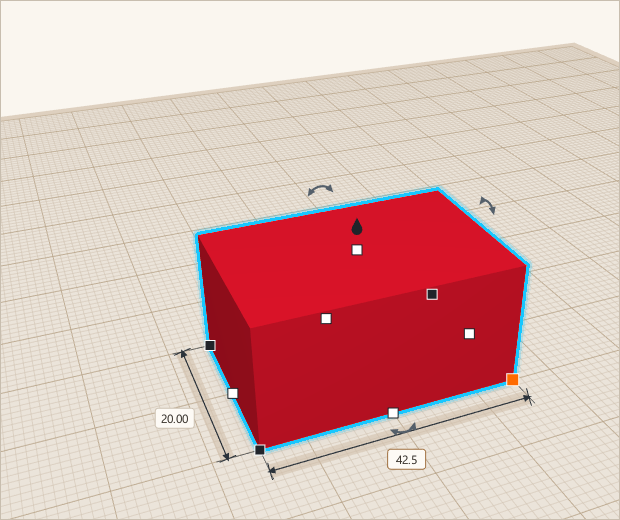
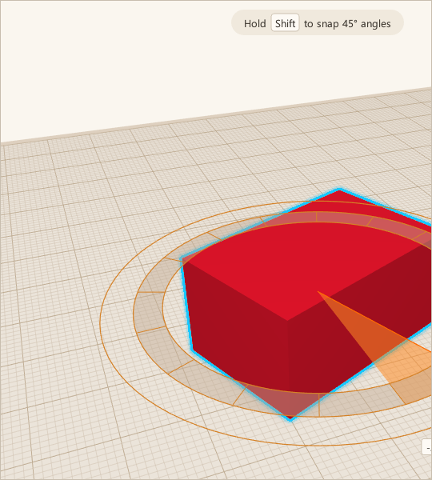
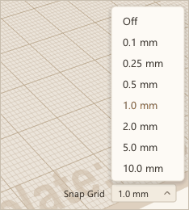
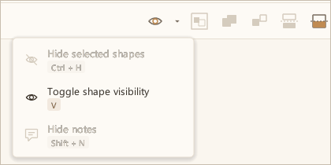
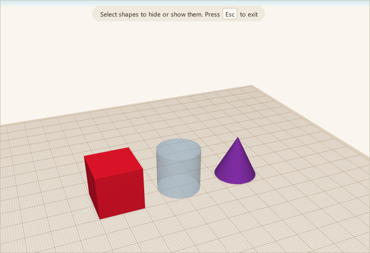

Chapter 4
Moving, sizing and turning
This chapter covers selecting shapes and changing where they are, how big they are and which way they face, by dragging or by typing exact numbers.
Selecting
| To | Do this |
|---|---|
| Select a shape | Click it |
| Add a shape to the selection, or take it out | Hold Shift and click it |
| Select several shapes at once | Drag a box round them, starting on an empty part of the view |
| Select everything | Ctrl+A |
| Select nothing | Click an empty part of the view, or press Esc |
Selected shapes have a blue outline. A shape under the pointer gets a thinner outline, to show what a click would pick.

With several shapes selected, the handles go round all of them, and moving, sizing and turning act on them together.
The handles
A selected shape has handles for everything you can do to it with the mouse.

- Corner handles (black squares, one at each corner of the base). Drag to change the length and the width together.
- Edge handles (white squares, in the middle of each side of the base). Drag to change the length or the width alone.
- Top handle (white square on top). Drag to change the height.
- Lift handle (the black cone above the top). Drag to raise the shape off the plate or lower it.
- Turn handles (the three curved arrows). Drag one to turn the shape about one axis.
Keys that change a drag:
| While | Hold | To |
|---|---|---|
| Sizing | Shift | Keep the shape's proportions |
| Sizing | Alt | Size about the middle, so opposite sides move together |
| Moving | Shift | Move in a straight line along one axis |
| Moving | Alt | Leave the shape where it is and drag a copy |
| Turning | Shift | Turn in steps of 45° |
A hint at the top of the view reminds you of the key for what you are doing. Esc cancels a drag and puts the shape back.
Moving
Drag a shape to slide it across the build plate. Two numbers show how far it has moved along each direction.

To move a shape up or down, drag its lift handle. The number is its height above the plate.

From the keyboard:
| Keys | Move |
|---|---|
| Arrow keys | One step of the snap grid across the plate |
| Shift + arrow keys | Ten steps |
| Ctrl+Up, Ctrl+Down | One step up or down (with Shift, ten) |
| D | Drop the shape straight down onto the plate |
The arrow keys follow the view: the up arrow moves the shape away from you, whichever way you are looking.
Sizing with exact numbers
Dragging a handle is quick. Typing is exact.
- Click a handle (don't drag it). The sizes it controls appear as numbers beside the shape.
- Click a number. It becomes a box you can type in.
- Type the size and press Enter. Esc leaves it as it was. Tab keeps what you typed and moves on to the next number (Shift+Tab to the one before).

The top handle shows the height, and the lift handle shows how far the shape is above the plate. Both can be typed the same way.
What you can type:
- A plain number, in the design's units:
42.5 - A fraction, handy in inches:
1/8,1 1/2 - A number with its unit, whatever the design's units are:
25mm,2.5cm,1in,3/4"
Many shapes also have their sizes in the Properties panel (a box has Length, Width and Height), which is often the quickest place to type them.
Turning
Drag one of the three turn handles. A protractor appears, and the angle is shown as you drag.

- Keep the pointer inside the protractor to turn in steps of 22.5°.
- Move it outside the protractor to turn in steps of 1°.
- Hold Shift for steps of 45°.
For an exact angle, let go and then click the angle shown beside the protractor, type the angle you want and press Enter. The protractor stays up, with its angle ready to type, until you select something else or make another change.
Each handle turns the shape about a different axis: one spins it flat on the plate, the other two tip it over forwards or sideways. After tipping a shape, press D to drop it back onto the plate.
To put a particular face down on the plate, use Lay flat (Lining up and measuring).
The snap grid
Shapes move and resize in steps. The step is the Snap Grid, at the bottom right of the view. Click it to choose another.

- In millimetres: Off, 0.1, 0.25, 0.5, 1, 2, 5 or 10 mm.
- In inches: Off, or a fraction from 1/64 to 1 inch.
A coarse step such as 1 mm keeps parts on round numbers. Choose a finer one, or Off, for fine adjustments. Numbers you type are never rounded to the grid.
Copying
| Keys | What it does |
|---|---|
| Ctrl+D | Duplicate: makes a copy exactly on top of the original and selects it, ready to resize, change or move |
| Ctrl+C, Ctrl+V | Copy and paste. The copy appears a little to one side |
| Ctrl+Shift+V | Paste in place: the copy appears exactly where the original is |
| Ctrl+X | Cut |
| Alt + drag | Drag a copy out of a shape |
| Delete | Delete the selection |
Duplicate leaves the copy in place on purpose, so the two shapes stay lined up while you change one of them. To make a standoff, for example, duplicate a cylinder, make the copy narrower, and turn it into a hole: the hole is already centered in the post.
To make a row of copies, duplicate a shape, move the copy, then press Ctrl+D again: each new copy repeats the move you gave the one before.
Copy and paste also work between two ScottiCAD windows.
Undo
Ctrl+Z undoes the last change and Ctrl+Y redoes it. ScottiCAD remembers the last 500 changes, so you can try things freely.
Hiding shapes
When a shape is in the way, hide it. A hidden shape is still part of the design; you just can't see or select it.
- Ctrl+H hides the selected shapes.
- Ctrl+Shift+H shows everything again. So does the eye button in the toolbar, which is highlighted while anything is hidden.
The small arrow beside the eye button opens a menu: Hide selected shapes, Toggle shape visibility and Hide notes.

Toggle shape visibility (key: V) is for hiding and showing several shapes. While it is on, hidden shapes appear as pale ghosts. Click any shape to hide it, or a ghost to show it again. Press Esc when you are done.

Locking shapes
Ctrl+L, or the padlock in Properties, locks the selected shapes. A locked shape can't be moved or changed by accident. Select it and press Ctrl+L again to unlock it.